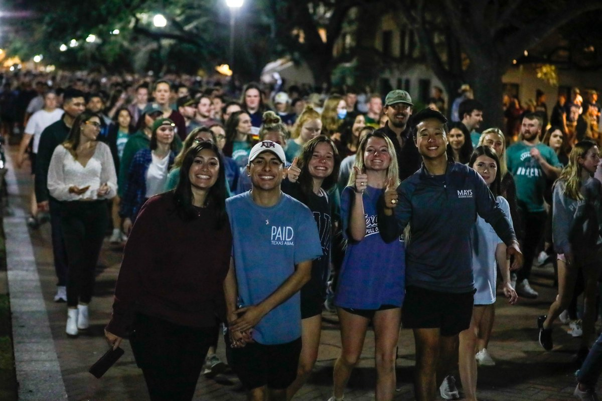

Silver Taps
Fish Walk
Group Members: Maxwell Vo
Date: June 17, 2025
Home | Traditions | Members
Silver Taps
Silver Taps is a Texas A&M Tradition held on the first Tuesday of each month as a tribute to fallen aggies.
It is held by a student gathering and the corp of cadets in the Academic Plaza.
Families and students
stand in silence as hymns and songs are played in honor of fallen Aggies.
When and Where
- First Tuesday of every Month
- Academic Plaza
Who is Involved?
- Students
- Corp of Cadets
Music Played
- Amazing Grace
- Silver Taps
Silver taps also refers to the song, which serves as the final tribute paid to an aggie who has passed.
For more information, you can click this pdf or word document.
Fish Walk

- The Gathering
- All the new fish gather at aggie park and participate in events while preparing for the walk.
- The Walk
- The walking part of the tradition will start and end at Aggie Park. It will be a loop around the campus.
- The Finish
- The Finish is at the end where fish will gather together to celebrate at the end of Fish Walk.
Fish Walk is a great opportunity for new Aggies to find new friends and explore Aggieland. Through socializing
through the walk and checking out all the places to go. This will be parallel to the elephant walk
that they will take around the time they leave the campus.
|